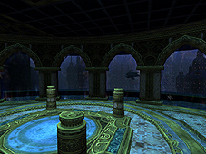
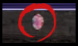
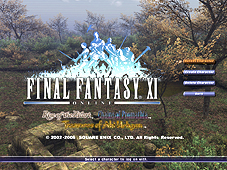

[Event-Related]

The new “Ruins of Alzadaal” region has been added.
The following adjustments have been made to Besieged:
Changes to Besieged as a whole:
-After a beastman army retreats, the enemy forces in that army’s stronghold will immediately begin to increase. The enemy forces will increase very slowly at first, but will gradually increase at a faster rate.
-If the enemy forces are reduced to a certain point, the rate at which they increase will accelerate.
-The enemy forces will increase if a player is KO’d in a beastman stronghold.
Changes to the beastman strongholds:
-New sections have been added to the beastman strongholds.
-Notorious monsters have been added that will periodically increase the enemy forces in the beastman strongholds.
-Archaic mirrors will now be surrounded by defending beastmen.
-Archaic mirrors now appear more frequently and have much higher endurance. In accordance with this change, players will receive less Imperial Standing credits when trading an archaic mirror to an Imperial guard.
Changes to Besieged battles:
-If certain notorious monsters in the beastman strongholds have not been defeated, units will be added to the armies advancing on Al Zahbi that have special characteristics, such as units that perform particular actions or can only be defeated under certain conditions.
-New notorious monsters have been added to the armies advancing on Al Zahbi.
-The monsters of each army are now able to use new special abilities.
-The rate of Imperial defense reduction after Besieged battles has been adjusted.
-When an army retreats while advancing towards Al Zahbi, it will now be counted the same as a successful Besieged battle in Al Zahbi.
-A status icon will appear when you are participating in a Besieged battle.
The new mercenary ranks “Lance Corporal” and “Corporal” have been added. In accordance, a number of new items have been added to the list of goods that can be earned with Imperial Standing credits.
The following changes have been made to Assault:
Five new missions are available at the rank of Lance Corporal, and another five missions at the rank of Corporal.
When participating in an Assault mission with more than the minimum number of people, the penalty on the number of Assault Points earned per person has been decreased.
The number of Assault Points earned for each Assault mission has been adjusted to better reflect the level of difficulty.
The following features have been added to the Mog Locker:
Players can now expand their Mog Lockers to hold a maximum of 60 items.
By speaking to the Aht Urhgan NPC Fubruhn and completing the necessary procedures, players can use their Mog Lockers in all Mog houses and rent-a-rooms in Vana’diel.
*However, these procedures will shorten the length of a Mog Locker lease from 7 to 5 Earth days. A Mog Locker lease costs one Imperial bronze piece to renew. In addition, the remaining time on the current lease will be proportionately reduced.
*At any time, you can switch between being able to use the Mog Locker in only Al Zahbi and being able to use it in other areas. If you choose to limit your Mog Locker use to Al Zahbi, the restrictions imposed on the Mog Locker lease will no longer be in effect.
The following changes have been made to Al Zahbi and Aht Urhgan Whitegate:
-The chocobo stables in Al Zahbi have opened.
*However, the NPCs at the chocobo stables may be captured during Besieged, disabling chocobo use until their rescue.
-The following NPCs have been added to Aht Urhgan Whitegate:
An equipment storage NPC
A special event item storage NPC
A Pursuivant NPC to transport players to Brenner and Ballista matches
A weather forecast NPC
-The Aht Urhgan Whitegate NPC “Kaduru-Haidaru” has started a new service for regular patrons.
-When the Astral Candescence is taken by the beastmen, players will only be able to use the NPC Shihu-Danhu for transport to the areas around Jeuno once per Vana’diel day.
-The services of guild shops and other NPCs affiliated with certain captured NPCs will now be unavailable as long as the affiliated NPC is captured.
-The time it takes for a prisoner to return to Al Zahbi after being freed has been adjusted.
The following changes have been made to the Kokba Hostel:
-Interior decorations have been added to the hostel.
-A bard is now available to change the BGM inside the hostel.
*The BGM will change only for the player who selected the song from the bard.
-Players outside the Kokba Hostel will no longer be able to hear conversations using /say or emotes from inside the hostel.
*However, /shout will still be heard by players both inside and outside the hostel.
-The linkshell settings option has been removed from the entry options list.
The following new quests have been added for the blue mage, corsair, and puppetmaster jobs:
-Artifact quests -- Players will receive equipment specific to their jobs (artifact armor) by completing these quests.
-Limit break quests -- Players can raise their maximum level to 75 by completing the limit break quest for their job.
*The new limit break quests will only be made available after the player has completed all artifact quests for that job.
A number of new quests have been added to the Treasures of Aht Urhgan areas.
The quest “Totoroon’s Treasure Hunt” will now cover several more items and areas.

The “Sanction” status icon has been altered.
Players can now receive a new Lamian fang key by checking a “???” point in Caedarva Mire after each Conquest results tally.
The following changes have been made to Conflict (Ballista and Brenner):
Changes to both Ballista and Brenner:
-Players hit repeatedly with Stun will gradually develop a resistance to the ability. This resistance will decrease with time.
-The following changes have been made to the blue magic spell “Self-Destruct”:
The damage will be split among the number of players in the caster’s area of effect.
The caster will now retain a slightly greater amount of HP after casting Self-Destruct.
Changes to Brenner only:
The graphical effect that appears when a Flammen-Brenner consumes a Petra and recovers from damage has been altered.
An issue in which the “Warhorse Hoofprint” was not appearing for long periods of time has been fixed.
[Battle-Related]
New notorious monster battlefields have been added to the Treasures of Aht Urhgan areas.
Requirements
In order to enter these new battlefields, it is necessary to speak to the NPC Shajaf in Aht Urhgan Whitegate after becoming a mercenary, and obtain a special key item in exchange for Imperial Standing credits.
Note that it is not possible to carry more than one of these key items at a time, or receive more than one in a 24-hour period (Earth time)
Key Items
Each battlefield requires a specific key item that one member of the party must be carrying. This key item will be lost upon entering the battlefield.
Battlefields
The battlefields, battle names, and restrictions are as follows:
| Key Item | Required Credits |
Battlefield | Battle Name | Restrictions |
| confidential Imperial order |
2000 | Talacca Cove | Call to Arms | Lv.60 30 minutes 6 members |
| Navukgo Execution Chamber | Tough Nut to Crack | |||
| Jade Sepulcher | Making a Mockery | |||
| secret Imperial order |
3000 | Talacca Cove | Compliments to the Chef | Lv.75 30 minutes 6 members |
| Navukgo Execution Chamber | Happy Caster | |||
| Jade Sepulcher | Shadows of the Mind |
The ENM quest "Pulling the Strings" will now be available for blue mages, corsairs, and puppetmasters.
The following new monsters have been added to the Treasures of Aht Urhgan areas:
Soulflayer
Wamoura
Several new notorious monsters have been added to the Treasures of Aht Urhgan areas.
The location of monsters has been adjusted in the following areas:
Arrapago Reef
Mount Zhayolm
Halvung
The following monster names have changed
Bhaflau Thickets: Jurik --> Skoffin
Arrapago Reef: Lamia No.19 --> Lamia No.18
The monster Ullikummi found in the Shrine of Ru'Avitau will now have different conditions for appearing.
An accumulative magic resistance effect has been implemented for monsters that /check as "impossible to gauge."
Affected Magic Types
The following magic types will trigger the accumulative magic resistance effect when used repeatedly on monsters whose strength is "impossible to gauge":
Black magic (elemental)
White magic (divine)
Ninjutsu
Magical Blood Pact abilities
Magical blue magic
Magical weapon skills (Spirits Within, Red Lotus, etc.)
Certain job abilities (Chi Blast, Mijin Gakure, etc.)
Resistance Fluctuation
When a monster with accumulative magic resistance is hit by a magic attack, the amount of damage it receives will decrease in accordance with that monster's resistance. At the same time, its resistance will increase.
The monster's resistance will increase in accordance with the amount of damage incurred, but each monster has a maximum resistance level.
Merit point job categories have become available for blue mages, corsairs, and puppetmasters.
In order to take advantage of merit points spent in these areas, a character must have the corresponding job set as the main job, and be level 75.
| Blue Mage | Corsair |
| Chain Affinity Recast | Phantom Roll Recast |
| Burst Affinity Recast | Quick Draw Recast |
| Monster Correlation | Quick Draw Accuracy |
| Physical Potency | Random Deal Recast |
| Magical Accuracy | Bust Duration |
| Puppetmaster | |
| Automaton Melee Skill | |
| Automaton Ranged Skill | |
| Automaton Magic Skill | |
| Activate Recast | |
| Repair Recast |
The 15 existing job categories have been divided into subcategories. Group 1 includes conventional abilities, while Group 2 includes the new job abilities, job traits, and spells.
The Group 1 and Group 2 subcategories have separate totals for the maximum number of possible ability increases.
You can access Group 2 abilities by spending 1 point on the ability you wish to learn. Additional points spent on the same ability will shorten the recast time or enhance the effect (refer to the help text for each ability to learn the specific bonus).
Lowering the number of merit points in an ability to zero will cause it to disappear from your ability list.
After obtaining the dragoon job trait "Empathy," you will be able to use the job ability "Spirit Link" even when your wyvern is at maximum HP.
| Warrior | Monk | ||
| Ability | Warrior's Charge | Ability | Mantra |
| Ability | Tomahawk | Ability | Formless Strikes |
| Job Trait | Savagery | Job Trait | Invigorate |
| Job Trait | Aggressive Aim | Job Trait | Penance |
| White Mage | Black Mage | ||
| Ability | Martyr | Magic | Flare II |
| Ability | Devotion | Magic | Freeze II |
| Magic | Protectra V | Magic | Tornado II |
| Magic | Shellra V | Magic | Quake II |
| Magic | Burst II | ||
| Magic | Flood II | ||
| Red Mage | Thief | ||
| Magic | Dia III | Ability | Assassin's Charge |
| Magic | Slow II | Ability | Feint |
| Magic | Paralyze II | Job Trait | Aura Steal |
| Magic | Phalanx II | Job Trait | Ambush |
| Magic | Bio III | ||
| Magic | Blind II | ||
| Paladin | Dark Knight | ||
| Ability | Fealty | Ability | Dark Seal |
| Ability | Chivalry | Ability | Diabolic Eye |
| Job Trait | Iron Will | Job Trait | Muted Soul |
| Job Trait | Guardian | Job Trait | Desperate Blows |
| Beastmaster | Bard | ||
| Ability | Feral Howl | Ability | Nightingale |
| Ability | Killer Instinct | Ability | Troubadour |
| Job Trait | Beast Affinity | Song | Foe Sirvente |
| Job Trait | Beast Healer | Song | Adventurer's Dirge |
| Ranger | Samurai | ||
| Ability | Stealth Shot | Ability | Shikikoyo |
| Ability | Flashy Shot | Ability | Blade Bash |
| Job Trait | Snapshot | Job Trait | Ikishoten |
| Job Trait | Recycle | Job Trait | Overwhelm |
| Ninja | Dragoon | ||
| Ninjutsu | Katon: San | Ability | Deep Breathing |
| Ninjutsu | Hyoton: San | Ability | Angon |
| Ninjutsu | Huton: San | Job Trait | Empathy |
| Ninjutsu | Doton: San | Job Trait | Strafe |
| Ninjutsu | Raiton: San | ||
| Ninjutsu | Suiton: San | ||
| Ability | Sange | ||
| Job Trait | Ninja Tool Expertise | ||
| Summoner | |||
| Blood Pact | Meteor Strike | ||
| Blood Pact | Heavenly Strike | ||
| Blood Pact | Wind Blade | ||
| Blood Pact | Geocrush | ||
| Blood Pact | Thunderstorm | ||
| Blood Pact | Grand Fall | ||
The following new spells have been added:
(The effects of Raptor Mazurka and Chocobo Mazurka are not cumulative.)
| Dark Magic | ||
| Absorb-TP | Lv.45 DRK |
Steals an enemy's TP. |
| Songs | ||
| Raptor Mazurka | Lv.37 BRD |
Increases movement speed for party members within area of effect. |
The amount of experience points recovered by using the white magic spells "Raise" and "Reraise" has been increased from 25% to 50%.
"Raise II," "Raise III," "Reraise II," and "Reraise III" will remain unchanged.
The status icons for the ninjutsu "Utusemi: Ichi" and "Utsusemi: Ni" have been changed.
The following changes have been made to blue magic:
An issue concerning the job trait associated with "Dimensional Death" not functioning correctly has been addressed.
An issue concerning the effect of TP on "Grand Slam" has been addressed.
The help for the following blue magic spells has been corrected: Amplification, Cannon Ball, Disseverment, Stinking Gas, Awful Eye
The following magical blue magic spells have had their accuracy adjusted: Venom Shell, Maelstrom, Ice Break, Blitzstrahl, Mysterious Light, Cold Wave, Poison Breath, Stinking Gas, Filamented Hold, Magnetite Cloud, Eyes On Me, Hecatomb Wave, Radiant Breath, Sound Blast, Feather Tickle, Yawn, Voracious Trunk, Lowing, Heat Breath, Soporific, Geist Wall, Awful Eye, Frost Breath, Infrasonics, Flying Hip Press, Firespit
The duration of "Awful Eye" has been adjusted.
Blue mages are now capable of equipping chakram-type throwing weapons.
Puppetmasters are now capable of using the weapon skills "Howling Fist" and "Dragon Kick."
The TP bonus for the weapon skill "Evisceration" has been changed to "Chance of critical hit varies with TP."
An issue concerning the TP bonus not functioning correctly when using the following weapon skills has been addressed:
Dulling Arrow
Arching Arrow
Sniper Shot
Heavy Shot
An issue concerning the ability to use 2 Phantom Rolls under certain circumstances when a character's job was set to main bard, support corsair has been addressed.
Players rean area of Dynamis but failing to enter after trading a timeless hourglass to "Trail Markings" or "Hieroglyphics" will now incur the three-day (Earth time) entry restriction penalty.serving
It will once again be possible to receive experience for defeating monsters from the "Chigoe" family.
[Item-Related]
The following items have been added to the list of equipment sets that certain NPCs can change into a key item for easy storage:
Blue mage artifact armor/corsair artifact armor/puppetmaster artifact armor
The following items have been added to the list of goods that certain NPCs can store:
Lotus Katana/Moogle Rod/Miniature Airship
There are new items available in several shops:
Several new automaton attachments have been added.
The following items have been added to the list of ammunition that can be bundled as a quiver or pouch:
Bullet/Bronze Bullet
New synthesis recipes have been added.
The damage and delay for the following level 68+ daggers have been changed:
Kard/Venom Kukri/Venom Kukri +1/Hoplites Harpe/Harpe/Valiant Knife/Stun Kukri/Stun Kukri +1/Sirocco Kukri/Daylight Dagger/Taillefer's Dagger/Behemoth Knife/Behemoth Knife +1/Thief's Knife/Khanjar/Misericorde/Misericorde +1/Dagger of Trials/Master Caster's Knife/Buccaneer's Knife/Bartholomew's Knife/Stylet/Titan's Baselard/Blau Dolch/Martial Knife/Gully/Gully +1/Ponderous Gully/X's Knife/Mighty Knife/Heart Snatcher/Perseus's Harpe/Jambiya/Jambiya +1/Thanatos Baselard/Batardeau/Mandau
The following changes have been made to gardening:
-New seeds have been added.
-The harvesting yield for certain produce has changed.
The following changes have been made to the auction house:
-The “Automaton” category has been added. All automaton parts have been moved into this new category.
-The following items have been moved into the “Pet Items” category:
Gausebit wildgrass/Gysahl greens
The graphical effect that appears when using dice to learn Phantom Roll abilities has been altered.
The item name “Bard Cannions” has been changed to “Bard’s Cannions.”
[System-Related]
The following scenes have been added to the title screen:

FINAL FANTASY XI
North Gustaberg/Jugner Forest
Rise of the Zilart
The Sanctuary of Zi'Tah/Yuhtunga Jungle
Chains of Promathia
Carpenters' Landing/Bibiki Bay
Treasures of Aht Urhgan
Aht Urhgan Whitegate/Wajaom Woodlands
The added areas will not be displayed if the corresponding software or expansion disc contents have not been registered.
The following changes have been made to chocobo digging:
The general number of buried items available within each area has been increased.
The number of items that can be dug up by each individual player over a certain period of time will be restricted.
Several new buried items are now available (digging up these new items will require a chocobo that has acquired a special ability through chocobo raising).
The position of "West Aht Urhgan" within the area search menu has been changed.
Many new terms have been added to the auto-translate function.
| Category | Term |
| Game Terms | Automaton |
| Game Terms | Chocobo stables |
| Game Terms | Chocobo raising |
| Game Terms | Care schedule |
| Game Terms | Plan length |
| Game Terms | Matchmaking |
| Game Terms | Care |
| Game Terms | Feed |
| Game Terms | Burrow |
| Game Terms | Bore |
| Game Terms | Mental |
| Game Terms | Physical |
| Game Terms | Outing |
| Game Terms | Owner |
| Game Terms | Race |
| Game Terms | Strength |
| Game Terms | Endurance |
| Game Terms | Discernment |
| Game Terms | Receptivity |
| Game Terms | Affection |
| Game Terms | Energy |
| Game Terms | Stamina |
| Game Terms | Retirement |
| Game Terms | Destrier |
| Game Terms | Courser |
| Game Terms | Palfrey |
| Game Terms | Jennet |
| Game Terms | Rounsey |
| Spells | Absorb-TP |
| Songs | Sirvente |
| Songs | Dirge |
| Job Abilities | Warrior's Charge |
| Job Abilities | Tomahawk |
| Job Abilities | Mantra |
| Job Abilities | Formless Strikes |
| Job Abilities | Martyr |
| Job Abilities | Devotion |
| Job Abilities | Assassin's Charge |
| Job Abilities | Feint |
| Job Abilities | Fealty |
| Job Abilities | Chivalry |
| Job Abilities | Dark Seal |
| Job Abilities | Diabolic Eye |
| Job Abilities | Feral Howl |
| Job Abilities | Killer Instinct |
| Job Abilities | Nightingale |
| Job Abilities | Troubadour |
| Job Abilities | Stealth Shot |
| Job Abilities | Flashy Shot |
| Job Abilities | Shikikoyo |
| Job Abilities | Blade Bash |
| Job Abilities | Deep Breathing |
| Job Abilities | Angon |
| Job Abilities | Sange |
| Job Trait | Savagery |
| Job Trait | Aggressive Aim |
| Job Trait | Invigorate |
| Job Trait | Penance |
| Job Trait | Aura Steal |
| Job Trait | Ambush |
| Job Trait | Iron Will |
| Job Trait | Guardian |
| Job Trait | Muted Soul |
| Job Trait | Desperate Blows |
| Job Trait | Beast Affinity |
| Job Trait | Beast Healer |
| Job Trait | Snapshot |
| Job Trait | Recycle |
| Job Trait | Ikishoten |
| Job Trait | Overwhelm |
| Job Trait | Ninja Tool Expertise |
| Job Trait | Empathy |
| Job Trait | Strafe |
| Job Abilities | Meteor Strike |
| Job Abilities | Geocrush |
| Job Abilities | Grand Fall |
| Job Abilities | Wind Blade |
| Job Abilities | Heavenly Strike |
| Job Abilities | Thunderstorm |
[For Xbox 360 version players:]
After fulfilling certain requirements, players will be able to speak with title-changing NPCs to unlock Xbox 360 “achievements.”
In the case where players have no titles available to change, they will be unable to unlock any achievements.
The screen displayed when viewing the map now has a black border, and map coordinates have become easier to read.
Now compatible to the 1024x768 screen resolution.
[Known Issues]
We are currently aware of the following issues in this version update. These issues are scheduled to be resolved in the version update on August 2nd, 2006.
- If the player changes their Mog Locker accessibility to Al Zahbi only after their contract has expired, a message will display saying, “The availability of your Mog Locker has been increased, however your lease has already expired.” However, the availability has in fact been limited to only Al Zahbi.
- The samurai merit point ability “Overwhelm” is not functioning correctly.
The continuing Aht Urhgan missions and chocobo raising mentioned in Topics will be implemented at a slightly later date due to extended testing requirements.
Aht Urhgan Missions: August 2
Chocobo Raising: August 22